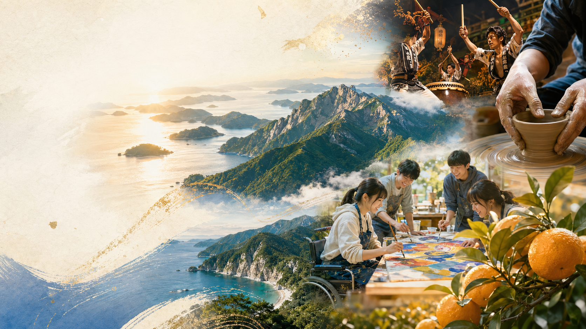
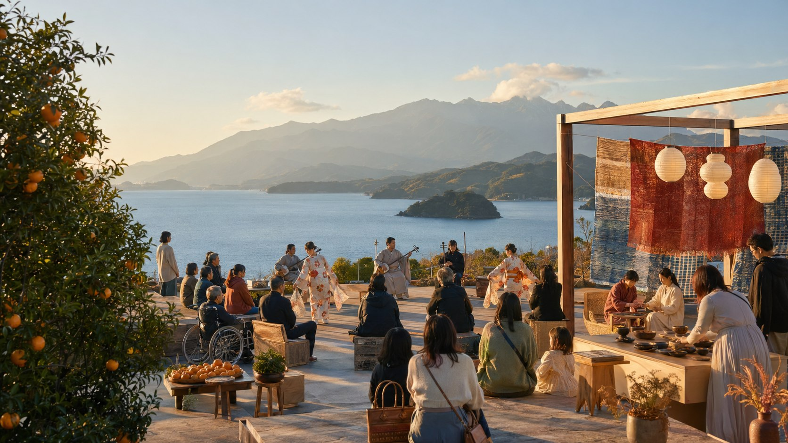
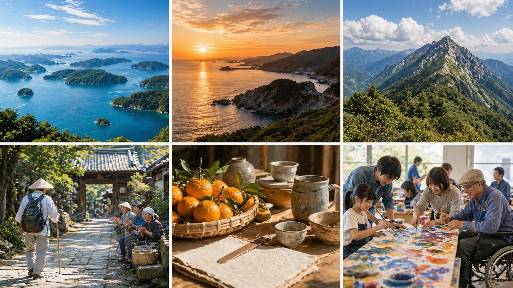

協賛区分・掲載順は正式制度に基づく
正式決定後、この方針に沿って具体的な情報を掲載します。
企業と文化をつなぐ
協賛、寄付、協力企業・団体の総合一覧です。

ページの役割
協賛、寄付、協力企業・団体の総合一覧です。
写真表現



掲載イメージ
正式決定後、この方針に沿って具体的な情報を掲載します。
正式決定後、この方針に沿って具体的な情報を掲載します。
正式決定後、この方針に沿って具体的な情報を掲載します。
完成形の具体例
協賛パートナー募集LPのトーンに合わせ、企業向けのブランドサイト風ファーストビュー、協賛価値、参画テーマ、協賛メニュー、使途、流れ、FAQ、関心表明フォームを公式サイト内でも展開します。
「協賛・応援企業一覧」では、協賛金、寄付、物品、サービス、広報協力を分けて案内するための情報を整理します。
正式決定後は、この方針に沿って本文・資料リンク・問い合わせ先を更新します。
掲載内容の仮イメージ
協賛パートナー募集
瀬戸内海、宇和海、石鎚山、四国遍路、お接待の心に育まれた愛媛の文化を全国へ発信し、次世代へつなぐ協賛パートナーを募集する想定です。協賛区分・金額・特典は正式募集要項確定後に掲載します。
協賛が生む価値
文化芸術、伝統文化、若者の活動、障がい者芸術を支える姿勢を公式媒体で伝えます。
会場掲出、公式サイト掲載、広報素材で文化祭を支えるパートナーとして紹介します。
県民、来場者、文化団体、市町、教育・福祉関係者との新しい接点をつくります。
ボランティア、広報協力、地域イベント参加など、社内外の参加機会へつなげます。
誰もが文化に参加できる大会づくりを、企業活動と結びます。
協賛メニュー
| 協賛方法 | 想定内容 | 正式決定後に掲載する事項 |
|---|---|---|
| 協賛金 | 大会運営、広報、情報保障、地域プログラム等への支援 | 区分、金額、特典、申込期限 |
| 物品協賛 | 飲料、備品、印刷物、展示資材、ノベルティ等 | 受入条件、数量、納品方法 |
| サービス協賛 | 輸送、警備、通訳、撮影、Web制作、会場運営等 | 対象業務、役割分担、掲載可否 |
| 広報協力 | ポスター掲出、チラシ配架、SNS発信、社内報掲載等 | 素材、投稿ルール、掲出期間 |
協賛までの流れ
正式募集前でも、協賛・寄付・物品・サービス・広報協力の関心を登録できます。
企業規模、地域、支援テーマに応じて、参画方法を確認します。
募集要項確定後、申込書、掲載可否、ロゴデータ等を提出します。
公式サイト、会場、広報物等で、決定した範囲に基づき紹介します。
掲載イメージ
文化芸術と次世代育成を支援する企業紹介の掲載例です。
会場運営、物品提供、広報協力などの掲載例です。
ポスター掲出、SNS発信、社内広報協力の掲載例です。
関心表明フォーム
同じ分類のページ
問い合わせ導線
担当部署、受付時間、メールアドレス等は正式決定後に掲載します。現段階では仮導線として総合問い合わせへ誘導します。